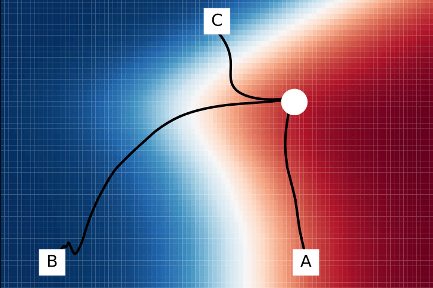

Jack Miller
contact
Building AI-native cybersecurity at
HelmGuard
.
HelmGuard: Terraforming Enterprise Security Data
2025
Jack Miller
Temporal Horizons in Forecasting: A Performance-Learnability Trade-off
2025
Pau Vilimelis Aceituno, Jack Miller et al.

Grokking Beyond Neural Networks
2024
Jack Miller, Charles O'Neill, Thang Bui
Measuring Sharpness in Grokking
2024
Jack Miller and Patrick Gleeson et al.
The Governance of Cyclone Interventions
2023
Jack Miller and Aaron Tang et al.
LLM Projects
2023 & 2024
Charles O'Neill, UniverseTBD and Jack Miller